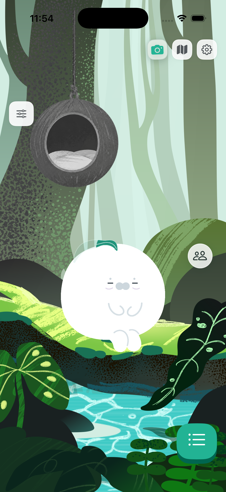
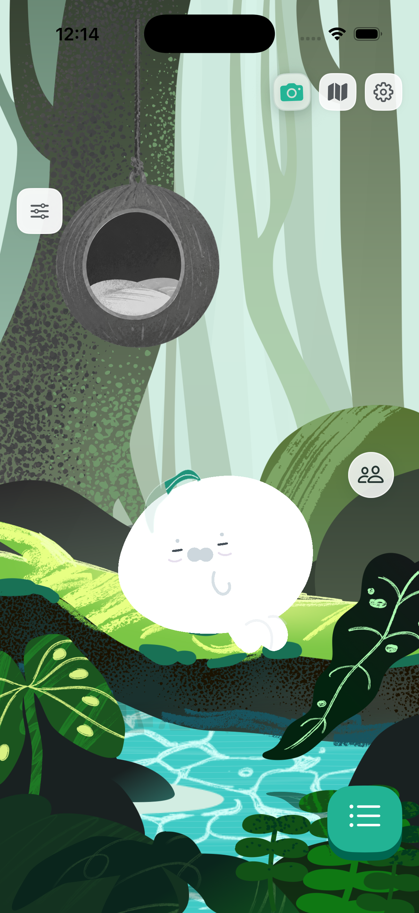
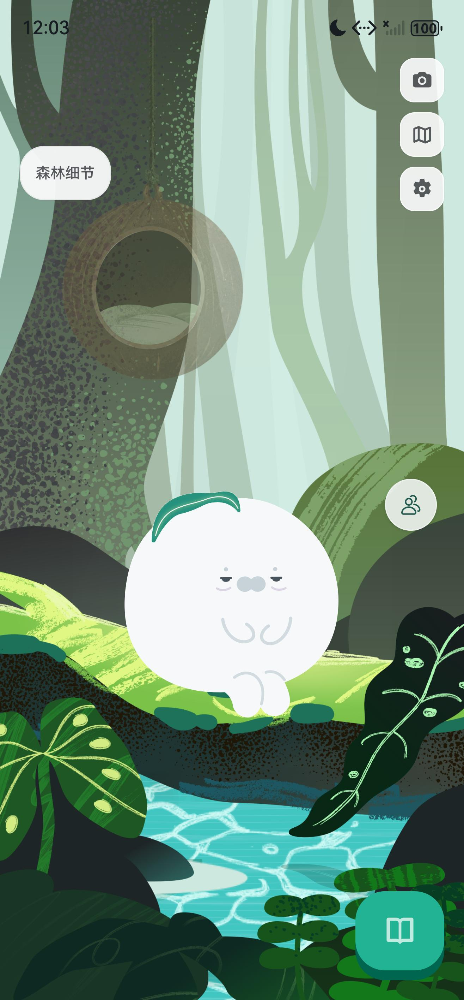
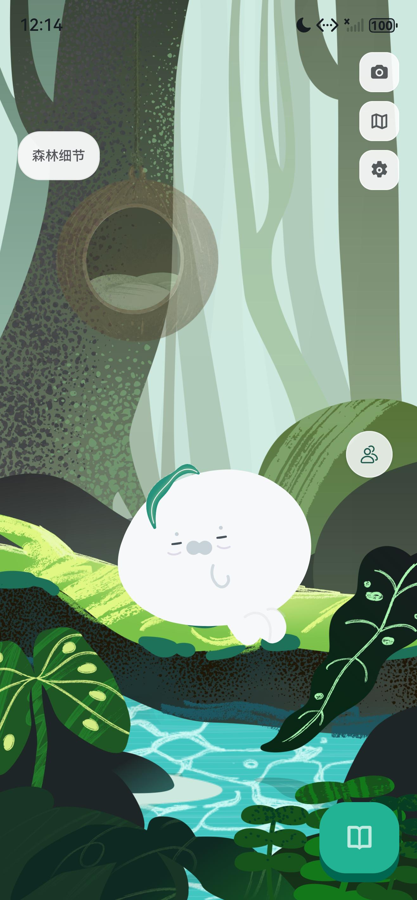
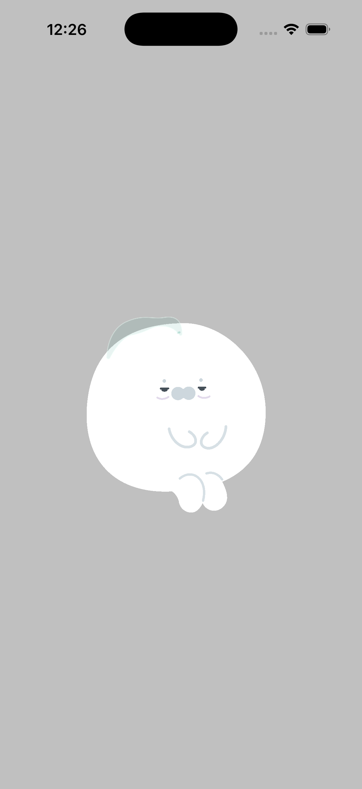
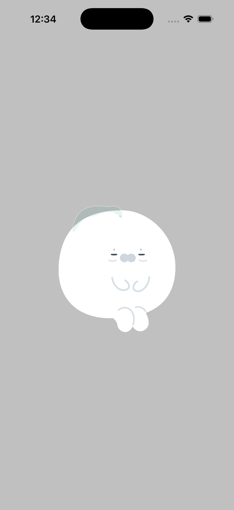
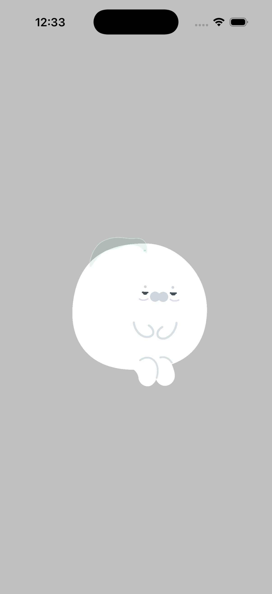

六种健康状态，11 种持续表现。疲倦会慢慢安顿，醒来需要重新聚焦；看到食物时，先把目光投过去。
身体缓慢降低，脚部保持落点，眼皮有重量。4.2 秒安顿完成后，Pibo 保持休息，不会弹回清醒待机。
11 秒静音实录。另在转场完成约两分钟后检查了休息姿态。
在两端 Debug「森林细节」面板选择各个表现，再点击「观察左侧／观察右侧」，可直接审阅完整原生动作。
点击图片查看原尺寸。各模拟器已有健康数据不同，头顶 bo 的填充量并非本次对照对象。




面部先朝食物移动，身体轻微跟随；疲倦仍然是疲倦。观察结束后回到当前姿态。



以上是实际 SpriteKit 渲染器的纯动作取证；未创建餐食贴纸、历史或奖励。正式流程仍需服务端确认食物后触发。
本页是模拟器验证。手机真机的持续帧率、温升与耗电仍待实测。